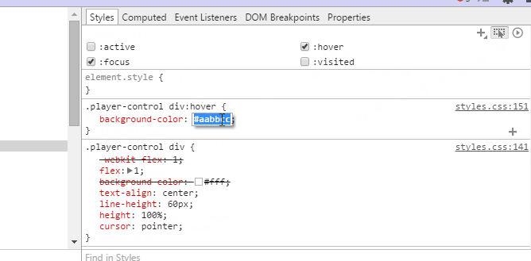

Chrome技巧大全
①Chrome 快捷键
{
"title": "web前端指南",
"description": "",
"language": "zh",
"plugins": [
"disqus",
"github",
"atoc",
"edit-link",
"prism",
"-highlight",
"baidu",
"splitter",
"sitemap",
"anchors",
"anchor-navigation",
"expandable-chapters",
"tbfed-pagefooter",
"include-codeblock",
"book-summary-scroll-position-saver",
"ad",
"jsfiddle",
"prism",
"-highlight"
],
"pluginsConfig": {
"disqus": {
"shortName": "webpack-handbook"
},
"github": {
"url": "https://github.com/zhaoda/webpack-handbook"
},
"atoc": {
"addClass": true,
"className": "atoc"
},
"expandable-chapters":{},
"ad": {
"contentTop": "",
"contentBottom": ""
},
"jsfiddle":{
"tabs":["result","js","css", "html"],
"height":500,
"widht":500
},
"edit-link": {
"base": "https://github.com/qiansr/book",
"label": "编辑本页"
},
"baidu": {
"token": "a9787f0ab45d5e237bab522431d0a7ec"
},
"sitemap": {
"hostname": "http://qiansr.github.io/book/sitemap.html"
},
"tbfed-pagefooter": {
"copyright":"© QIANSR",
"modify_label": "该文件修订时间：",
"modify_format": "YYYY-MM-DD HH:mm:ss"
}
}
}
| 热键 | 功能 |
|---|---|
| F12 | 打开Chrome控制台 |
| Ctrl+J | 进入下载内容 |
| Ctrl+H | 查看历史记录 |
| Ctrl+D | 加入书签 |
| Ctrl+T | 新建标签页 |
| Ctrl+W | 关闭标签页 |
| Ctrl+Shift+T | 打开最近关闭的标签页 |
| Ctrl+N | 新建窗口 |
| Ctrl+Shift+N | 新建隐私窗口 |
| Ctrl+O | 打开计算机中的文件 |
| Ctrl++Shift+O | 打开书签管理器 |
| Ctrl+Shift+Del | 打开“清除浏览数据”窗口 |
| Ctrl+Tab | 从左到右，标签循环浏览 |
| Ctrl+Shift+Tab | 从右到左，标签循环浏览 |
| Ctrl+1-8 | 分别指向第1、2、3…8标签 |
| Ctrl+Shift+B | 显示/隐藏书签栏 |
| Ctrl+Shift+D | 将所有打开的网页以书签的形式保存在新文件夹中 |
| Shift+Esc | 开打Chrome任务管理器 |
| 右键按住“←”或“→”箭头。 | 在当前标签页中显示浏览记录 |
| 双击标签栏空白区域 | 最大化或最小化窗口 |
②Chrome://about 指令
游览器地址栏输入"chrome://about"（或者 "Chrome://Chrome-urls"） 会打开一个显示如下命令的页面：
| 指令 | 描述 |
|---|---|
| chrome://accessibility | 查看浏览器当前访问的标签 |
| chrome://appcache-internals/ | 对HTML5应用的离线存储进行管理 |
| chrome://apps/ | Chrome网上应用商店 |
| chrome://bookmarks | Chrome书签管理 |
| chrome://cache/ | Chrome缓存 |
| 关于Chrome | chrome://chrome/和chrome://help/ |
| 关于Chrome的相关功能 | chrome://about/和chrome://chrome-urls/ |
| chrome://components/ | 查看相关组件 |
| chrome://conflicts/ | 查看所有已经载入或者将要载入主要程序中的 dll 模块 |
| chrome://crashes/ | 停用启用崩溃报告 |
| chrome://credits/ | 查看第三方软件许可证 |
| chrome://devices/ | |
| chrome://dns/ | 查看DNS记录 |
| chrome://downloads/ | 查看下载文件 |
| chrome://extensions/ | 查看扩展程序 |
| chrome://plugins/ | 停用启用相关插件 |
| chrome://flags/ | |
| chrome://flash/ | flash插件的详细信息 |
| chrome://gcm-internals/ | 消息推送服务 |
| chrome://history/ | 查看历史记录 |
| chrome://indexeddb-internals/ | 查看 html5的本地存储 |
| chrome://inspect/ | 查看开发工具 |
| chrome://invalidations/ | 失效的调试程序 |
| chrome://media-internals/ | 查看媒体内部数据 |
| chrome://memory-redirect/ | 查看内存信息 |
| chrome://memory-internals/ | |
| chrome://nacl/ | |
| chrome://net-internals | Chrome的抓包工具 |
| chrome://newtab | 打开新的标签 |
| chrome://omnibox/ | 智能地址栏 |
| chrome://predictors/ | URl输入命中率 |
| chrome://policy/ | 编辑策略 |
| chrome://print/ | 调用打印机 |
| chrome://profiler/ | 分析器 |
| chrome://serviceworker-internals/ | 调试服务 |
| chrome://quota-internals/ | 显示磁盘详细可用空间以及各个网站的使用配额 |
| chrome://settings/ | 设置 |
| chrome://signin-internals/ | 内部标签 |
| chrome://sync-internals/ | 各种同步记录 |
| chrome://system/ | 系统诊断数据 |
| chrome://terms/ | 查看Chrome服务条款 |
| chrome://thumbnails/ | 近期浏览的网站的首页快照（以相册的形式） |
| chrome://translate-internals/ | 内部翻译器 |
| chrome://tracing/ | 追踪访问URL，包括浏览和渲染的过程 |
| chrome://user-actions/chrome://user-actions/ | 监听用户行为 |
③控制台指令
| 指令 | 作用 |
|---|---|
| $_ | 表示最近一次表达式结果 |
| $0~4 | 表示最近在DOM结点树上点选的5个DOM节点 |
| $(selector) | document.querySelector() 的封装 |
| $$(selector) | document.querySelectorAll() 的封装 |
| monitor(fn) | 监听一个函数，输出函数名与执行时传入的参数 |
| unmonitor(fn) | 停止监听一个函数 |
| keys(object) | 返回所有属性名组成的数组 |
| values(object) | 返回所有属性值组成的数组 |
④console指令
| console指令 | 作用 |
|---|---|
| console.log | 输出普通信息 |
| console.info | 输出提示性信息 |
| console.error | 输出错误信息 |
| console.warn | 输出警示信息 |
| console.debug | 输出调试信息 |
| console.dir | 将DOM以树结构输出 |
| console.dirxml | 用来显示网页的某个node所包含的html代码 |
| console.group | 输出一组信息的开头 |
| console.groupEnd | 输出一组信息的结束 |
| console.assert | 断言，只有表达式为false才输出 |
| console.count | 执行计数器，输出执行次数 |
| console.profile配合console.profileEnd! | 配合使用来查看CPU使用相关信息，在Profiles面板里面查看就可以看到cpu相关使用信息! |
| console.timeLine和console.timeLineEnd | 配合一起记录一段时间轴 |
| console.trace | 堆栈跟踪相关的调试 |
| 查看上述具体API | https://developer.chrome.com/devtools/docs/console-api |
⑤console.log()指令
| 格式化符号 | 实现的功能 |
|---|---|
| %s | 格式化成字符串输出 |
| %d or %i | 格式化成数值输出 |
| %f | 格式化成浮点数输出 |
| %o | 转化成展开的DOM元素输出 |
| %O | 转化成JavaScript对象输出 |
| %c | 把字符串按照你提供的样式格式化后输入 |
添加格式化符号，后面跟css样式。 例子，输入：
console.log('%cRainbow Text ', 'background-image:-webkit-gradient( linear, left top, right top, color-stop(0, #f22), color-stop(0.15, #f2f), color-stop(0.3, #22f), color-stop(0.45, #2ff), color-stop(0.6, #2f2),color-stop(0.75, #2f2), color-stop(0.9, #ff2), color-stop(1, #f22) );color:transparent;-webkit-background-clip: text;font-size:5em;');
效果：
⑥chorme调试手机网页
- PC端安装最新的Chrome
- 手机端安装最新的Chrome ( Android机 )
- USB连接线
- PC端Chrome地址栏输入 chrome://inspect ，选中：
[X] Discover USB devices 可以检测到你的设备 可以看到监测到我的设备是C6603 #YT9108PMBJ
打开手机上的chrome，访问你需要调试的网站；这时pc上的chorme会出现你访问的网址的记录，如下图
点击上图访问链接下面的inspect，这个时候会打开一个新的窗口，你在此窗口上就能像以前调试桌面站点一样的调试手机站点了。
⑦chromc开发者工具
调试工具快捷键
| 命令 | 功能 |
|---|---|
| Ctrl + P | 快速查找项目文件 |
| Ctrl + G | 跳转到指定行 |
| Ctrl + Shift + F | 搜索源代码 |
| Ctrl + D | 选择下一个匹配项 |
| Ctrl + 点击鼠标 | 可多处同时编辑 |
| ctrl + shift + i | 打开调试工具 |
| ctrl + Z / ctrl + Y | 撤销 / 恢复 |
| Shift + 鼠标点击 | 在颜色预览功能时切换颜色格式 |
Event Listeners面板
查看元素上绑定的事情
- [x] All Nodes 显示包括代理绑定在该节点的父/祖父节点上的所有事件
- [x] Selected Node Only 只显示当前节点上绑定的事件 isAtribute属性： 是否通过 html 属性(类似onClick)形式绑定
设备模拟、设备传感仿真
模拟移动设备的传感器，例如触摸屏幕和加速计。 点击“show drawer”按钮，就可看见Emulation --> Sensors.
格式化js
Sources标签的左下角 '{}' 符号
查看不同状态下元素的样式

可视化的DOM阴影
浏览器在构建如文本框、按钮和输入框一类元素时，其它基本元素的视图是隐藏的。不过，你可以在Settings -> General 中切换成Show user agent shadow DOM，这样就会在元素标签页中显示被隐藏的代码。甚至还能单独设计他们的样式，这给你了很大的控制权。